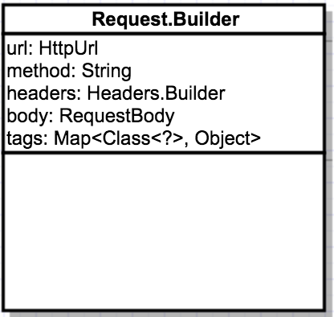
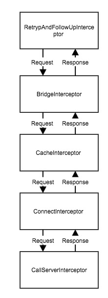

源码基于3.11.0版本
okHttp的请求分为两种, 同步和异步的.
本篇主要了解下两种请求的请求流程, 差异.
同步请求
我们先看下同步请求api的使用1
2
3
4
5
6
7
8val okHttpClient by lazy { OkHttpClient() }
private fun synchronousRun(url: String): String?{
val request = Request.Builder()
.url(url)
.build()
val response = okHttpClient.newCall(request).execute()
return response?.body()?.string()
}
Request
Request的代码就不看了, 可以看出是使用建造者模式, 根据具体配置去build.要注意的是, 这里传入的url, 如果是websocket协议的url, 会替换成http, 最后url会包装成一个HttpUrl对象1
2
3
4
5
6
7
8
9
10
11
12public Builder url(String url) {
if (url == null) throw new NullPointerException("url == null");
// Silently replace web socket URLs with HTTP URLs.
if (url.regionMatches(true, 0, "ws:", 0, 3)) {
url = "http:" + url.substring(3);
} else if (url.regionMatches(true, 0, "wss:", 0, 4)) {
url = "https:" + url.substring(4);
}
return url(HttpUrl.get(url));
}
另外关于GET的请求, 在Request构造器初始的时候, 就会默认为GET请求, 所以如果是POST请求的时候, 需要调用Request.Build().post(body)方法1
2
3
4
5
6
7public Builder() {
this.method = "GET";
this.headers = new Headers.Builder();
}
public Builder post(RequestBody body) {
return method("POST", body);
}

我们可以看下Request可配置项, 分别包含一个Url, 一个请求的方法, header列表, 请求体和tags(关于tags我们后续再讲)
Call
请求需要准备一个Call对象, 他表示在未来的时间点内可以随时执行准备好的请求. 我们可以看到实际执行的时候, 其实使用的是RealCall对象, 具体看下请求执行的过程1
2
3 public Call newCall(Request request) {
return RealCall.newRealCall(this, request, false /* for web socket */);
}
execute
1 | public Response execute() throws IOException { |
executed表示对应的call是否已经执行, 这里同步锁可以避免了竞态条件的出现, 可以看出一个call实例只能被执行一次, 是一个”消耗品”
关于Dispatcher我们可以看下在同步请求下他具体的执行和结束的代码1
2
3
4
5
6
7
8
9
10
11
12
13
14
15
16
17
18
19
20
21
22
23
24// 执行方法
synchronized void executed(RealCall call) {
runningSyncCalls.add(call);
}
// 通知结束
void finished(RealCall call) {
finished(runningSyncCalls, call, false);
}
private <T> void finished(Deque<T> calls, T call, boolean promoteCalls) {
int runningCallsCount;
Runnable idleCallback;
synchronized (this) {
// 移除call
if (!calls.remove(call)) throw new AssertionError("Call wasn't in-flight!");
if (promoteCalls) promoteCalls();
runningCallsCount = runningCallsCount();
idleCallback = this.idleCallback;
}
// 判断当前异步请求和同步请求数总和是否为0, 如果为0 则调用闲置时候的回调
if (runningCallsCount == 0 && idleCallback != null) {
idleCallback.run();
}
}
可以看到在同步请求的时候, dispatcher的执行和完成通知, 实际是针对于runningSyncCalls对象的管理.1
2
3
4
5
6
7
8
9
10
11
12
13
14
15
16
17
18
19
20
21
22
23
24
25
26Response getResponseWithInterceptorChain() throws IOException {
// Build a full stack of interceptors.
List<Interceptor> interceptors = new ArrayList<>();
// 自定义拦截器
interceptors.addAll(client.interceptors());
// 失败重试或者重定向的拦截器
interceptors.add(retryAndFollowUpInterceptor);
// 请求和响应的转换处理拦截器
interceptors.add(new BridgeInterceptor(client.cookieJar()));
// 缓存拦截器, 从缓存中请求并将响应写入缓存
interceptors.add(new CacheInterceptor(client.internalCache()));
// 建立连接拦截器, 并继续下一个拦截器
interceptors.add(new ConnectInterceptor(client));
if (!forWebSocket) {
// 用户自定义的拦截器
interceptors.addAll(client.networkInterceptors());
}
// 最后一个拦截器, 处理网络调用服务器
interceptors.add(new CallServerInterceptor(forWebSocket));
Interceptor.Chain chain = new RealInterceptorChain(interceptors, null, null, null, 0,
originalRequest, this, eventListener, client.connectTimeoutMillis(),
client.readTimeoutMillis(), client.writeTimeoutMillis());
return chain.proceed(originalRequest);
}
我们可以看到, 实际执行是RealInterceptorChain.proceed1
2
3
4
5
6
7
8
9
10
11
12
13
14
15
16
17
18
19
20
21
22
23
24
25
26
27
28
29
30
31
32
33
34
35
36
37
38
39
40
41
42
43
44
45public Response proceed(Request request, StreamAllocation streamAllocation, HttpCodec httpCodec,
RealConnection connection) throws IOException {
if (index >= interceptors.size()) throw new AssertionError();
calls++;
// If we already have a stream, confirm that the incoming request will use it.
if (this.httpCodec != null && !this.connection.supportsUrl(request.url())) {
throw new IllegalStateException("network interceptor " + interceptors.get(index - 1)
+ " must retain the same host and port");
}
// If we already have a stream, confirm that this is the only call to chain.proceed().
if (this.httpCodec != null && calls > 1) {
throw new IllegalStateException("network interceptor " + interceptors.get(index - 1)
+ " must call proceed() exactly once");
}
// 请求下一个责任链
RealInterceptorChain next = new RealInterceptorChain(interceptors, streamAllocation, httpCodec,
connection, index + 1, request, call, eventListener, connectTimeout, readTimeout,
writeTimeout);
// 获取当前的拦截器
Interceptor interceptor = interceptors.get(index);
// 执行, 返回响应
Response response = interceptor.intercept(next);
// 保证下一个拦截器会调用到chain.proceed().
if (httpCodec != null && index + 1 < interceptors.size() && next.calls != 1) {
throw new IllegalStateException("network interceptor " + interceptor
+ " must call proceed() exactly once");
}
// 保证拦截器返回的响应不为空
if (response == null) {
throw new NullPointerException("interceptor " + interceptor + " returned null");
}
// 保证响应的body不为空
if (response.body() == null) {
throw new IllegalStateException(
"interceptor " + interceptor + " returned a response with no body");
}
return response;
}
这里可以把拦截器理解成工厂模式, 包装Request, 递归执行拦截器抽象的intercept方法, 然后将返回的Response再传回上一个拦截器内做处理.再返回看前面的getResponseWithInterceptorChain方法, 可以看出真正请求执行的就在这一块, 根据责任链的设计思想, 将操作分开进行处理.
具体流程可看下图

异步请求
现在我们再回头看下异步请求时, 与同步请求有什么区别.1
2
3
4
5
6
7
8
9 public void enqueue(Callback responseCallback) {
synchronized (this) {
if (executed) throw new IllegalStateException("Already Executed");
executed = true;
}
captureCallStackTrace();
eventListener.callStart(this);
client.dispatcher().enqueue(new AsyncCall(responseCallback));
}
在执行异步调用的时候, okHttp包装了一个AsyncCall对象通过dispatcher进行执行.AsyncCall继承NamedRunnable, 实现了Runnable接口.1
2
3
4
5
6
7
8
9synchronized void enqueue(AsyncCall call) {
// 判断当前异步请求数是否小于最大请求数 以及 同主机的请求数是否小于每个主机的最大请求数
if (runningAsyncCalls.size() < maxRequests && runningCallsForHost(call) < maxRequestsPerHost) {
runningAsyncCalls.add(call);
executorService().execute(call);
} else {
readyAsyncCalls.add(call);
}
}
可以看到异步请求, 在dispatcher内部会维护两个集合以及一个线程池: runningAsyncCalls表示当前执行的异步请求队列, readyAsyncCalls表示等待执行的异步请求队列.执行内容我们可以看AsyncCall.execute, 他在判断请求是否取消后, 会调用getResponseWithInterceptorChain方法, 后面的请求走到的步骤就与同步相同了.然后通过dispatcher关闭管理.1
2
3
4
5
6
7
8
9
10
11
12
13
14
15
16
17
18
19
20
21
22
23
24
25 protected void execute() {
boolean signalledCallback = false;
try {
// 责任链执行
Response response = getResponseWithInterceptorChain();
if (retryAndFollowUpInterceptor.isCanceled()) {
signalledCallback = true;
responseCallback.onFailure(RealCall.this, new IOException("Canceled"));
} else {
signalledCallback = true;
responseCallback.onResponse(RealCall.this, response);
}
} catch (IOException e) {
if (signalledCallback) {
// Do not signal the callback twice!
Platform.get().log(INFO, "Callback failure for " + toLoggableString(), e);
} else {
eventListener.callFailed(RealCall.this, e);
responseCallback.onFailure(RealCall.this, e);
}
} finally {
client.dispatcher().finished(this);
}
}
}
1 | private void promoteCalls() { |
这里唯一的区别是, 异步请求调到Dispatcher.finished的时候, 会调到promoteCalls方法, 他用来判断调度当前异步请求数是否超过最大请求, 如果没有, 则会从异步请求等待队列中获取出来再进行请求执行.由此, Dispatch才做到了内部针对于异步请求的线程管理, 实现了对应策略下同时请求的最大化.
总结
本篇主要了解同步请求和异步请求的主干流程, 可以看出异步请求和同步请求的区别, 就在于, 异步请求真正执行是通过Dispatcher进行管理与执行, 虽然同步请求也用到了Dispatcher, 但它主要是用来做同步请求队列的管理.两类请求真正的请求网络的处理, 都是通过调用getResponseWithInterceptorChain方法进行处理.
整体流程可以参照拆轮子系列：拆 OkHttp里的下图